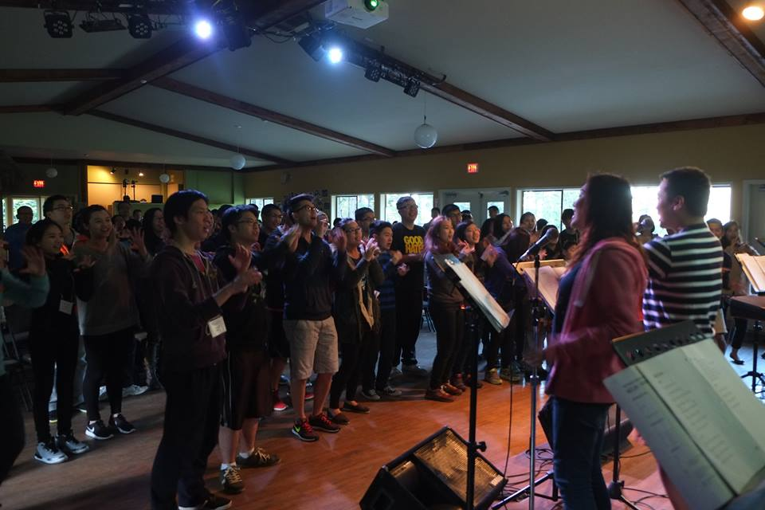

Speakers! back
許宏度博士簡介
蘇格蘭亞伯丁大學新約博士，加拿大維真神學院道學碩士。
曾任維真神學院新約講師，內地會宣教士，中華福音神學院副教授，北美華神教授。

Rev. Gareth Evans is an itinerant pastor/teacher with a burden to minister to the hurting church. Formerly a Physics teacher in the UK and Canada, he became a pastor with the Christian & Missionary Alliance in Canada in 1979.
In 1991, he was invited to serve as pastor on board the M/V Anastasis, a medical, missionary ship operated by Youth With A Mission (YWAM). Since leaving that ministry four years later, Gareth has traveled to many countries, encouraging pastors and missionaries.
He is married to Anne and they have three married daughters, nine grandchildren and three great grandchildren. Gareth and Anne live in Victoria, in beautiful British Columbia, Canada.
加雷斯埃文斯是一個對那些受傷的教會有負擔的巡迴牧師。他同時也是一位教師，從前在英國和加拿大都做過物理老師，但是在1979年蒙召成為加拿大宣道會的一名牧師。在1991年，他被邀請在M/V Anastasis這艘船上擔任牧師， 這是一個由青年使命組織（YWAM）運作的一艘宣教船。自從埃文斯牧師離開牧會四年之後，他去過很多國家，鼓勵並支持了很多牧師和傳教士。 他與安妮結婚住在加拿大美麗的卑詩省的維多利亞。在那裡，他們養育了三個女兒，九個孫子，三個曾孫。
